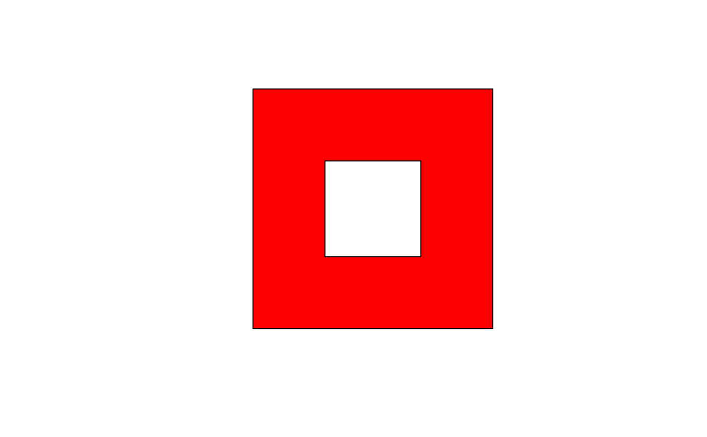

topo-bin-gDifference.RdFunction for determining the difference between the two given geometries.
gDifference(spgeom1, spgeom2, byid=FALSE, id=NULL, drop_lower_td=FALSE, unaryUnion_if_byid_false=TRUE, checkValidity=NULL)
| spgeom1, spgeom2 | sp objects as defined in package sp |
|---|---|
| byid | Logical vector determining if the function should be applied across ids (TRUE) or the entire object (FALSE) for spgeom1 and spgeom2 |
| id | Character vector defining id labels for the resulting geometries, if unspecified returned geometries will be labeled based on their parent geometries' labels. |
| drop_lower_td | default FALSE; if TRUE, objects will be dropped from output GEOMETRYCOLLECTION objects to simplify output if their topological dinension is less than the minimum topological dinension of the input objects. |
| unaryUnion_if_byid_false | default TRUE; if |
| checkValidity | default NULL, integer 0L (no action), 1L (check), 2L (check and try to buffer by zero distance to repair). If NULL, a value set to 0L for GEOS < 3.7.2, 1L for GEOS >= 3.7.2 is read from values assigned on load. Error meesages from GEOS do not say clearly which object fails if a topology exception is encountered. If this argument is > 0L, |
Returns the regions of spgeom1 that are not within spgeom2. If the geometries do not intersect then the result is just spgeom1. Note that the function is not symmetric for spgeom1 and spgeom2.
Error messages from GEOS, in particular topology exceptions, report 0-based object order, so geom 0 is spgeom1, and geom 1 is spgeom2.
x = readWKT("POLYGON ((0 0, 0 10, 10 10, 10 0, 0 0))") y = readWKT("POLYGON ((3 3, 7 3, 7 7, 3 7, 3 3))") d = gDifference(x,y) plot(d,col='red',pbg='white')# Empty geometry since y is completely contained with x d2 = gDifference(y,x)